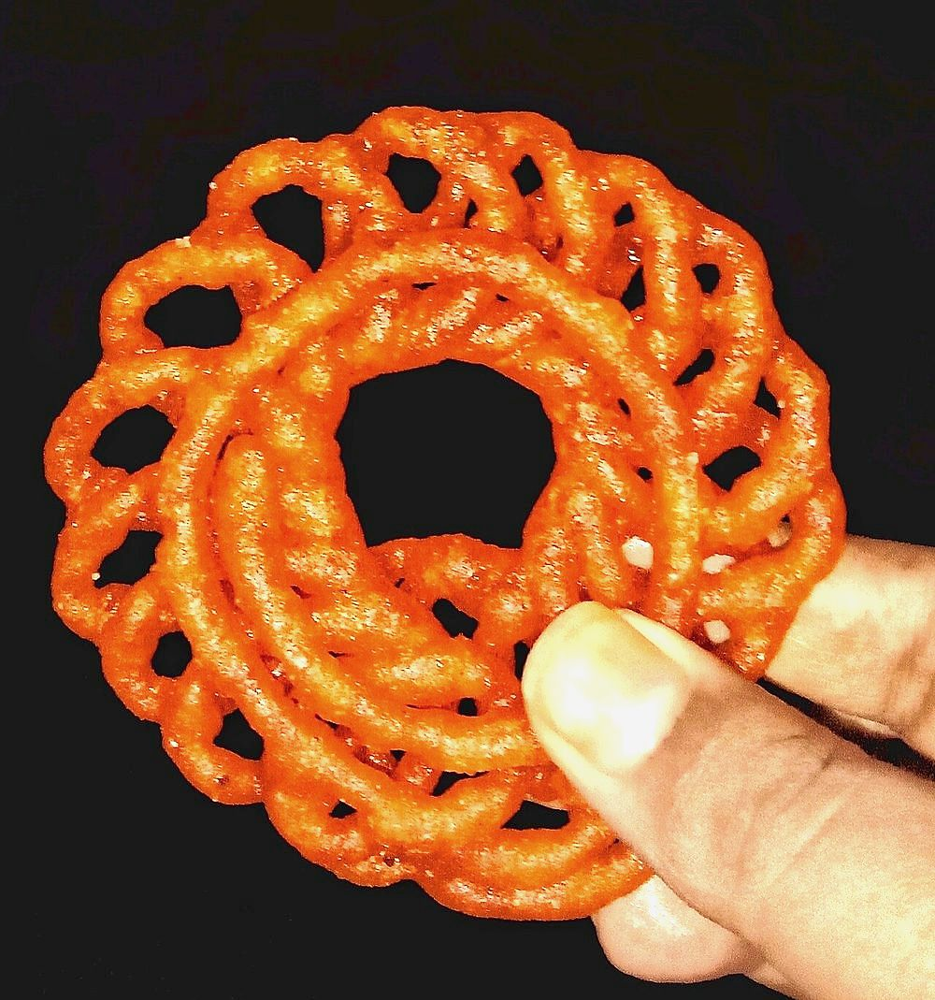

Imarti
urad dal batter piped into flower coils and soaked in syrup, denser than jalebi

Allergens: none of the ten listed below
Checked against the ingredient list for ten allergens: milk, egg, fish, crustaceans, tree nuts, peanuts, sesame, mustard, soy and gluten. Brands vary, so read the label on anything new to you.
Ingredients
Quantities for 15.
- 250g, soaked 4 hours Urad Dalimarti is dal, not flour; that is the whole difference from jalebi
- 400g Sugar
- 200ml Water
- a pinch Saffron
- 4 pods, seeds ground Cardamom
- 1/2 Lemonkeeps the syrup from crystallising
- 500ml for deep frying Neutral Oil
Cookware
stovetop, kadhai, blender
Before you start
- Imarti is thicker, darker and chewier than jalebi because it is made from ground urad dal rather than fermented flour.
- The batter must be beaten until it floats. That aeration is what stops the imarti being a solid lump.
Method
- Grind the drained dal with as little water as possible into a smooth, stiff paste.
- Beat it hard by hand for 5 minutes until pale and airy.Drop a little in water. If it floats, it is ready. If it sinks, keep beating.
- Boil the sugar and water with the saffron and cardamom to a one-thread syrup, add the lemon juice and keep warm.
- Pipe the batter into hot oil in a flower shape: a ring with loops around the outside.
- Fry on medium until crisp on both sides, about 3 minutes, keeping the colour pale.
- Lift straight into the warm syrup for 2 minutes, then drain on a rack.Two minutes only. Longer and they go limp.
Storage
Best the day they are made. They keep 2 days at room temperature in a covered tin, going softer each day.
Nutrition Low estimate
Low protein: 4 g a serving, 7% of the calories
| Per serving48 g | Per 100 g | |
|---|---|---|
| Calories | 201 kcal | 418 kcal |
| Protein | 3.6 g | 8 g |
| Carbohydrate | 37.1 g | 77 g |
| of which sugars | 27.0 g | 56 g |
| Fibre | 2.6 g | 5 g |
| Fat | 4.8 g | 10 g |
| of which saturated | 0.5 g | 1 g |
| of which unsaturated | 4.0 g | 8 g |
Syrup left in the bowl, or batter that yields more than the stated servings, means the real figures are likely lower. Nearest database match used for urad dal. Estimated from raw ingredients using USDA FoodData Central.
Times, yields, allergens and nutrition are guidance. Use your own judgement on doneness and on storing. More in About.